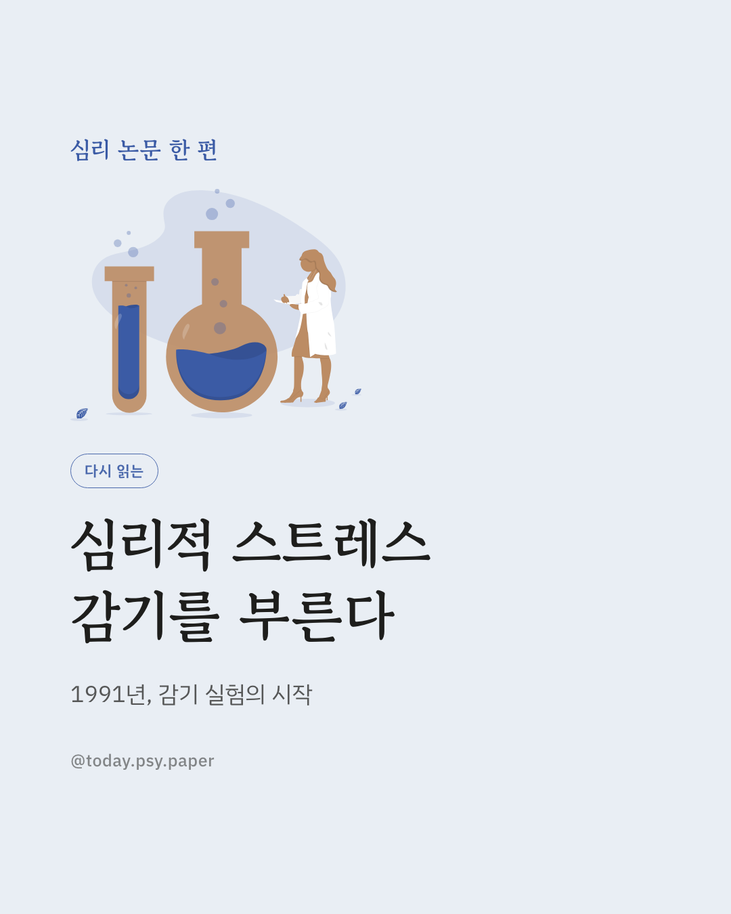
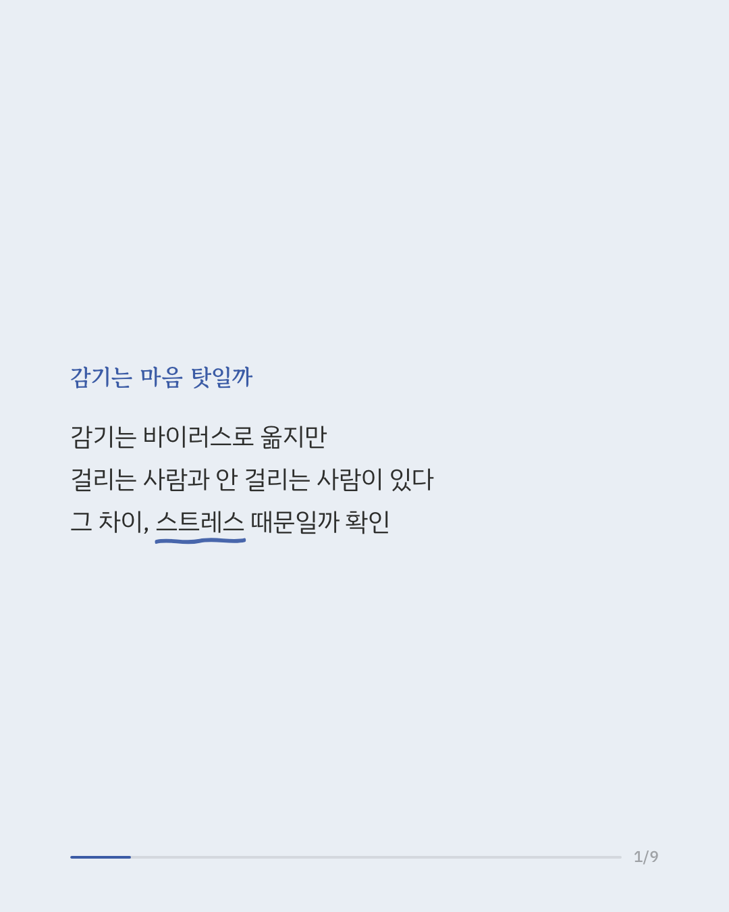
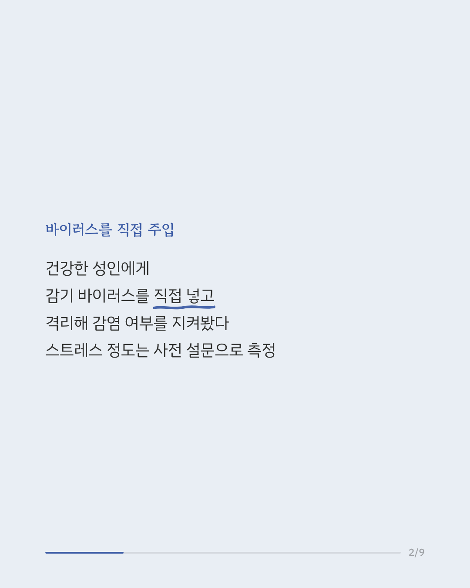
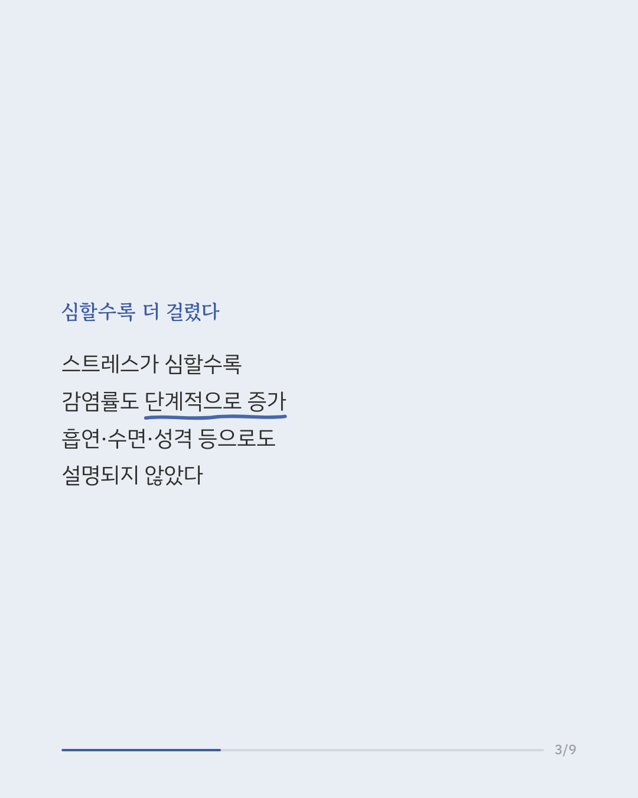
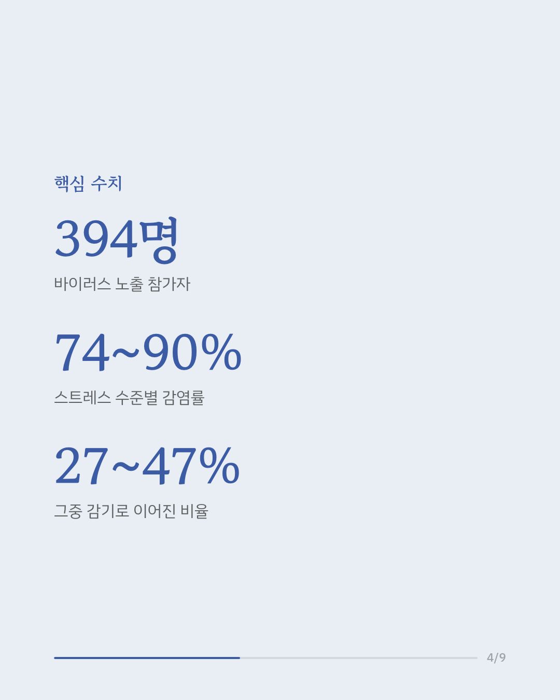
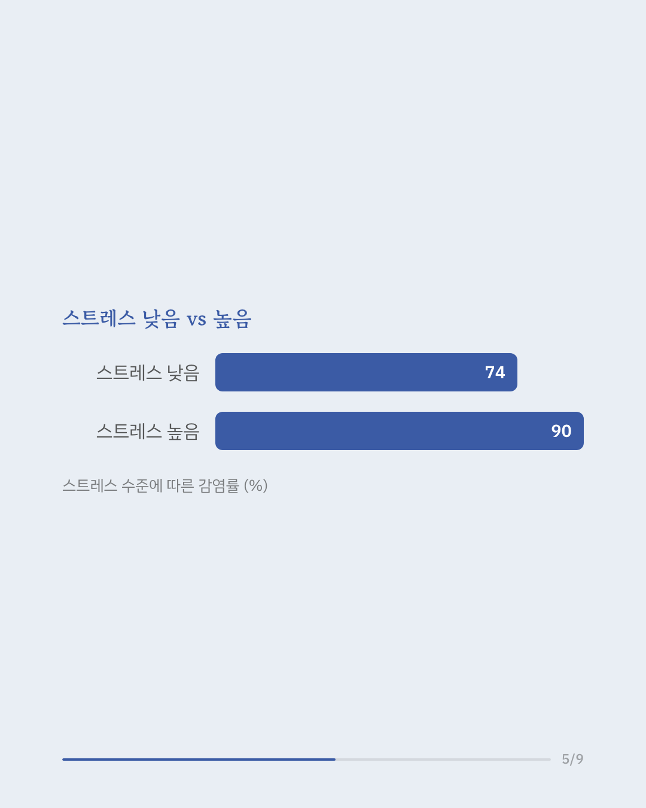
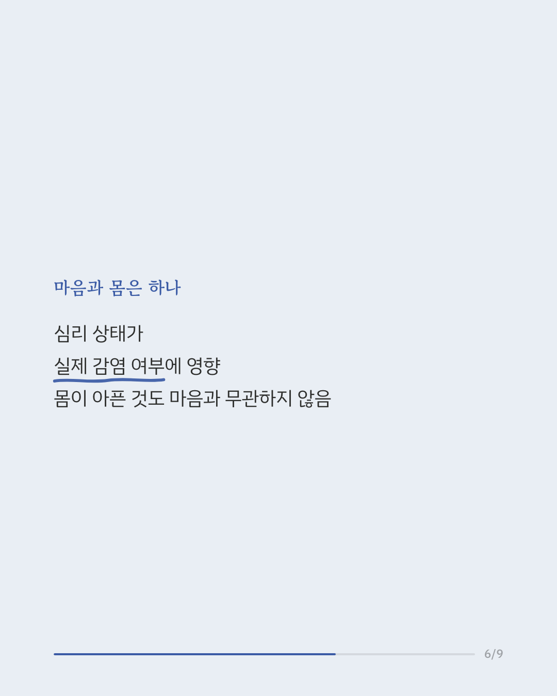
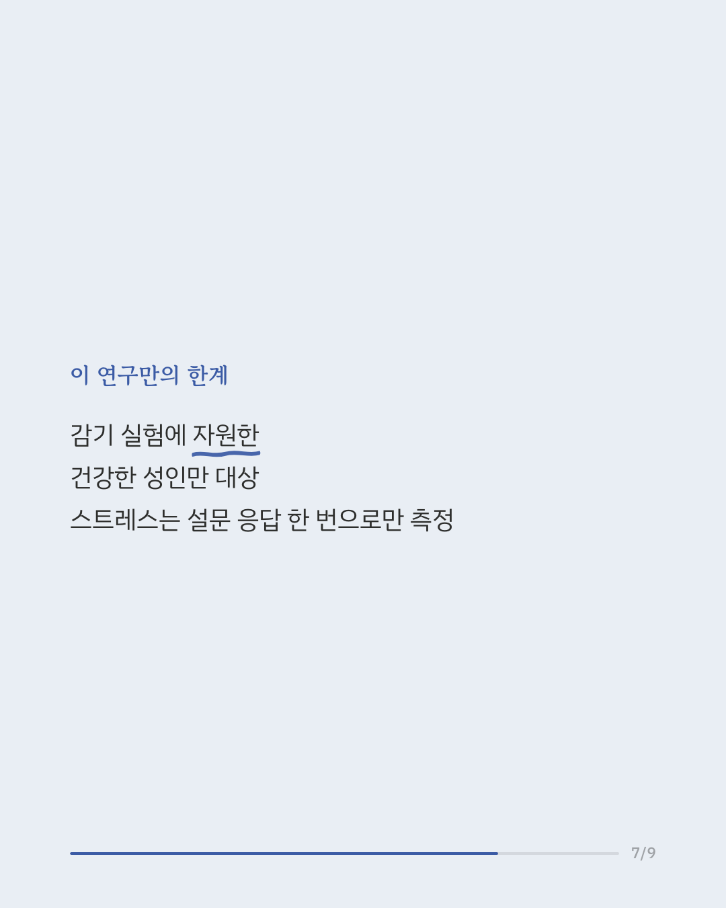
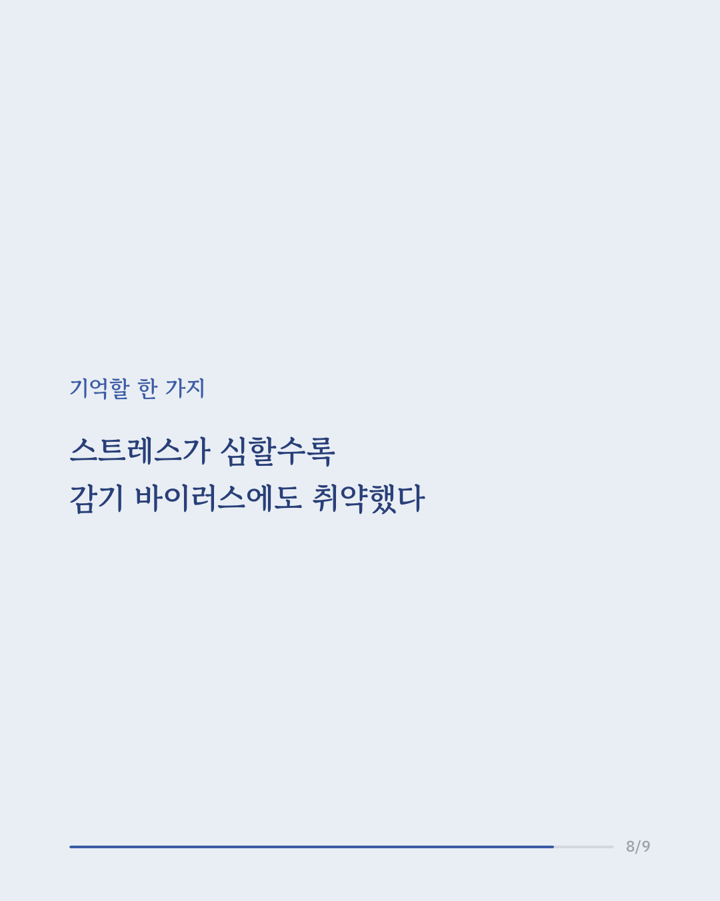
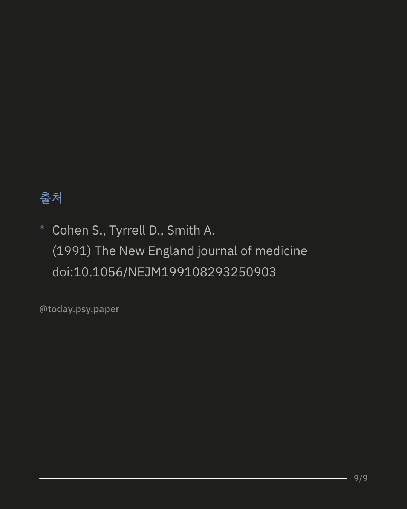

감기는 정말 마음 탓일까요. 1991년 발표된 이 연구는 심리적 스트레스가 실제로 감염과 감기 발병에 영향을 미치는지 실험으로 확인했습니다. 건강한 성인 394명에게 감기를 유발하는 다섯 가지 바이러스 중 하나를 코에 직접 넣고 격리 상태에서 감염과 증상 발생을 지켜봤습니다. 참가 전에는 설문으로 스트레스 정도를 측정했습니다. 그 결과 스트레스가 심할수록 감염률과 감기 발병률이 단계적으로 높아졌습니다. 감염률은 스트레스 수준에 따라 약 74%에서 90%까지, 감기로 이어진 비율은 27%에서 47%까지 차이가 났습니다. 이 관계는 나이, 성별, 흡연, 수면, 성격 특성 등 다른 요인으로는 설명되지 않았습니다. 이 연구는 심리적 스트레스가 몸의 감염 저항력과 관련 있을 수 있다는 초기 증거로 오래 인용돼 왔습니다. 다만 참가자는 실험에 자원한 건강한 성인으로 한정됐고, 스트레스는 실험 전 한 차례 설문으로만 측정됐습니다. The New England Journal of Medicine (1991), 'Psychological stress and susceptibility to the common cold' #스트레스관리 #면역력 #감기예방 #건강심리학 #심리면역학 #정신건강정보 #논문리뷰
python3 publish.py 1713648